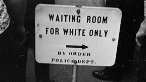
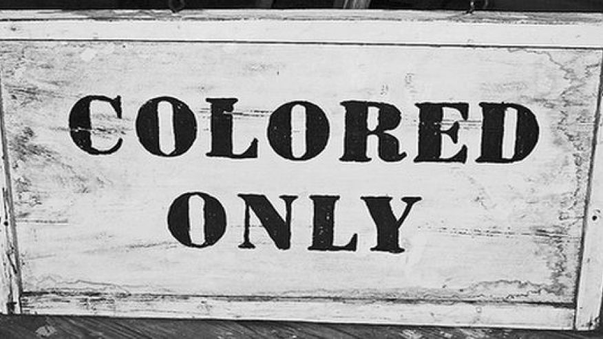

Why We Can't Wait
"Oppressed people cannot remain oppressed forever. The yearning for freedom eventually manifests itself, and that is what has happened to the American Negro. Something within has reminded him of his birthright of freedom, and something without has reminded him that it can be gained... with his black brothers of Africa and his brown and yellow brothers of Asia, South America, and the Caribbean, the United States Negro is moving with a sense of great urgency toward the promised land of racial justice" (101). blackthen.com/signs-of-segregation
The Black Revolution will not be over until every black man can have every opportunity the white man has. We will not use their aggression to reach this goal. We know in our hearts that we are right, and that is all we need to win this battle. Segregationists like Bull Connor will not be enough to stop us. Although every event pushes us towards a brighter future, the events of the Birmingham were especially important.

Stare into the eyes of the oppressor and know that you are right.
Nonviolence
Bull Connor
Birmingham
tdpbaltimore.org/curriculum-segeration